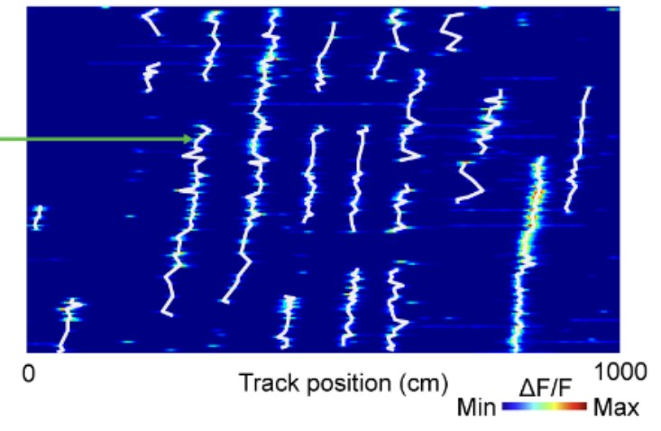
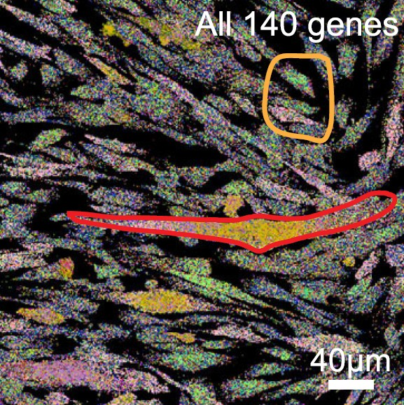
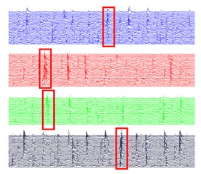

Hello Everybody, i am
Lujia Chen
I'm a neuroscience researcher with strong skill in data science and software engineering. My research focus is modeling populational neural dynamics to explain animal behavior in spatial navigation task. I'm also a individual application developer works on cloud-based web application and mobile application
Selected research

Gradually stabilized grid cell activity during long term spatial learning
Grid cells in the medial entorhinal cortex integrate internal and external cues over days of learning. During virtual navigation, grid fields shift backward before stabilizing and anchoring to landmarks. Slow hippocampal–entorhinal Hebbian plasticity and reduced inhibition consolidate these evolving maps, enabling precise spatial memory through gradual cognitive map formation.

Spatial transcriptomic in human muscle tissues
FSHD arises from abnormal DUX4 derepression, requiring single-cell approaches. We apply MERFISH spatial transcriptomics to profile 140 genes in control, mutant, and patient myotubes. Results reveal distinct "FSHD-hi" and "FSHD-lo" states, altered differentiation trajectories, and disrupted gene networks, providing insights into multinucleated transcriptomics and FSHD pathogenesis.

Temporally correlated hippocampal neuron clusters
Using in vivo calcium imaging in mouse hippocampal CA1, we identified excitatory neuron sub-populations with temporally correlated activity forming anatomical clusters. These clusters vary across environments and persist in darkness, revealing a topographic organization that links neural dynamics to spatial structure, shaping hippocampal sequences and episodic memory formation.
Individual developer Projects

Echo in the Crystal Realm
An LLM-powered Chat Game featuring multi-AI discussion and personalized responses.
- Mobile: React Native + Expo
- Backend: Express.js, OpenAI API, Firebase
- Data Science: NLP, emotion analysis, semantic analysis
PaperCraft Lite
A frontend-only research manuscript editor. Upload figure panels (PNG/PDF/EPS), compose multi-panel figure grids, annotate data & code paths, and write your paper — everything runs in the browser with no server required.
- Frontend: React 18 + TypeScript + Vite
- State: Zustand + localStorage (no backend)
- Features: drag & drop panels, PDF rendering, figure export
Nexus — Autonomous Competitive Intelligence
A microservices platform that continuously monitors competitors, scrapes intelligence from the web, and synthesizes insights using a multi-agent LangGraph pipeline. Generates structured research reports with opportunities, risks, and predictions.
- Backend: Django, Celery, Redis, MySQL — deployed on Alibaba Cloud ECS
- AI Pipeline: LangGraph multi-agent, Scrapy, Selenium
- Frontend: React 18 + TypeScript + Vite, live WebSocket report streaming
GNN Drug Discovery — HIV Inhibition Prediction
An end-to-end Graph Neural Network pipeline for molecular biology. Trains GCN and GIN models on the ogbg-molhiv benchmark to predict whether molecules inhibit HIV replication. Includes a live Streamlit dashboard with training curves, dataset stats, and real-time SMILES inference.
- Models: GCN + GIN (Graph Isomorphism Network) · 4 message-passing layers
- Dataset: ogbg-molhiv (41,127 molecules, scaffold split) · Metric: ROC-AUC
- Stack: PyTorch Geometric · OGB · RDKit · Streamlit · GitHub Actions (auto-training)
EEG Insights — Automated Brain Signal Analysis
A fully automated pipeline that downloads open-source EEG datasets weekly, runs ERP, ERDS and CSP+LDA motor imagery decoding (MNE-Python + scikit-learn), generates figures, and publishes research-grade reports as a blog.
- Pipeline: Python · MNE · scikit-learn · MOABB — runs on GitHub Actions weekly
- Analysis: ERP, ERDS maps, CSP+LDA decoding (up to 99.8% accuracy)
- Frontend: React + Vite blog — auto-updated on every analysis run
Clinical Analyst Prep — Interview Quiz
An interactive quiz platform for clinical data analyst interview preparation. Covers SQL, clinical data standards, biostatistics, regulatory compliance, clinical trial design, and EHR systems. Features category filtering, instant feedback, and score tracking.
- Topics: SQL · Clinical Standards · Biostatistics · Regulatory · Clinical Trials · EHR
- Features: Category filter · Instant explanations · Score tracking · Mobile-friendly
- Stack: Vanilla JS · HTML/CSS · GitHub Pages — zero backend